TRAVAIL EN COURS 
Introduction:
Ce tutoriel a pour but de permettre l'utilisation de l'interface d'administration du site de l'APF Guillaume d'achon par ses résidents.
Sommaire:
- Présentation générale
- Partie 1: Accès au panneau d'administration du site
- Partie 2: Présentation des différentes fonctionnalités de l'interface d'administration
- Partie 3:
- Partie 4:
- Conclusion
Notez qu'à chaque fin de partie, il y aura un lien qui vous permetrra de revenir au sommaire, ces liens sont facilement reconnaissable car il sont accompagnés de marios!
Présentation générale
"C'est quoi une interface d'administration?"
Pour répondre à cette question il va falloir nous poser deux autres questions...
"C'est quoi une interface?"
En informatique on parle plus spécialement d'interface homme-machine.
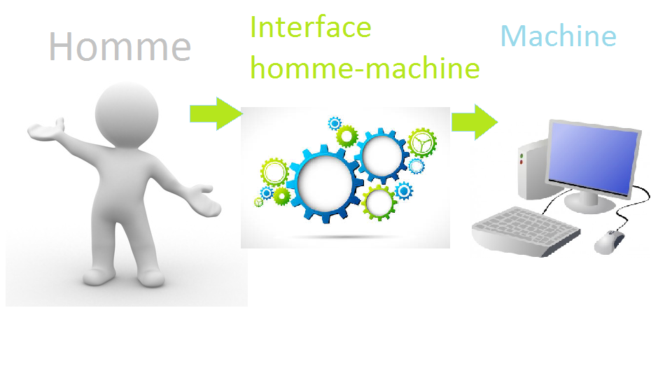
Les humains et les machines (ordinateur) ne parlant pas le même langage, il a fallut trouver une solution pour que les personnes ne connaissant pas le langage machine puissent communiquer avec les ordinateurs quand même. On a donc inventé des interfaces homme-machine pour permettre à tout le monde de pouvoir utiliser un ordinateur. Un exemple d'interface homme- machine est windows... et oui vous utilisez déjà des interces homme machine sans le savoir.
Et
"C'est quoi l'administration?"
L'administration en informatique c'est le fait de possèder des accès supérieurs aux autres utilisateurs permettant la gestion et l'organisation.
Une interface d'administration est donc un système qui permet la communication entre l'humain et la machine pour gérer, organiser. On va maintenant pouvoir passer aux choses intéressantes: l'utilisation du l'interface d'administration du site internet.
Partie 1: Accès au panneau d'administration du site.
On va voire dans cette partie comment accèder à l'interface d'administration du site internet. Ce qui va permettre de faire des modifications sur le site.
Etape 1: Aller sur le site de l'AFP
Ouvrez votre navigateur internet préféré...


Nous allons utiliser ici Mozzila firefox:
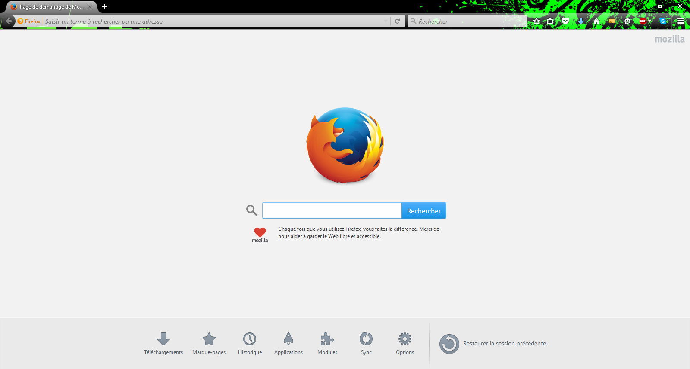
Ensuite nous allons aller tout simplement sur le site de l'afp guillaume d'achon comme sur l'image en dessous en rentrant directement l'url du site lui même (http://www.foyer-guillaume-dachon.fr/) .
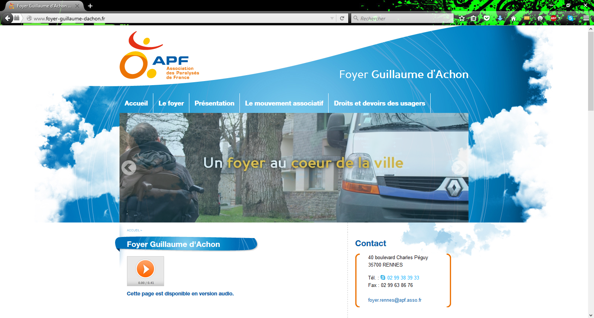Etape 2: modification de l'url
Pour avoir accès à l'interface d'administration il faut rajouter /administration à la fin de l'url du site internet située en haut dans la barre d'url.
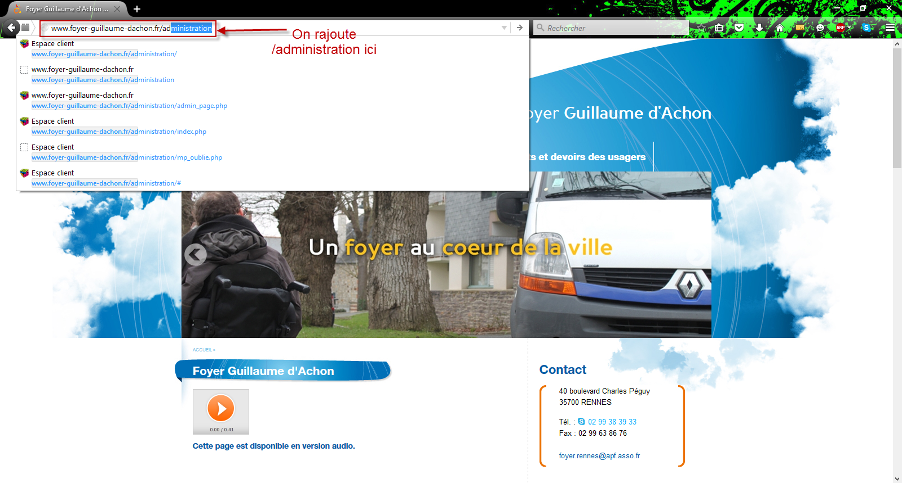Normalement vous devriez sur la page suivante:
Si vous voulez retourner sur le site internet vous pouvez tout simplement cliquer sur "visualiser le site" comme indiqué sur l'impression d'écran en dessous.
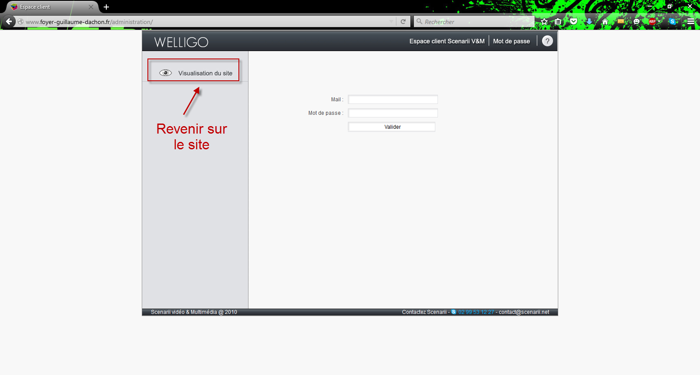
Etape 3: S'identifier sur l'interface d'administration
"C'est quoi s'identifier?"
Certaines applications, services sont protégés, seule les personnes autorisées peuvent y accéder. Il faut donc vérifier l'identitée de la personne, c'est ça qu'on appel l'identification. Généralement en informatique l'identification se fait gràce à un identifiant (votre nom, votre adresse mail, ...) et un mot de passe (que seul vous connaissez). Pour résumer l'identifiaction permet que seul les personnes qui sont autorisée à accéder à une application y accéde.
l'identification se fait en 3 étapes:
- 1: Entrer le mail
- 2: Entrer le mot de passe
- 3: Cliquer sur valider
Si vous avez suivi toute les étapes pas à pas et que tout c'est bien passé, vous devriez arriver sur la page suivante:
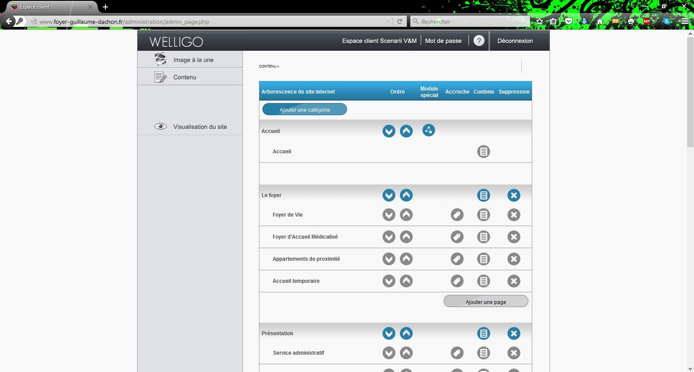Comme vous avez pu le deviner on est bien arrivé sur l'interface d'administration ... enfin. Nous verrons dans la partie suivante les différentes fonctionnalités de cette interface d'administration.
Partie 2 : Présentation des différentes fonctionnalités de l'interface d'administration
Nous allons voir ici les différentes fonctionnalités de l'interface d'administration.
1: Le bandeau du haut
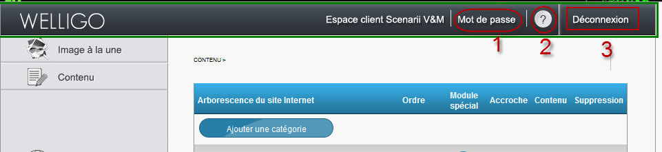Il y a 3 options importantes dans ce bandeau du haut (zone entourée par le cadre vert sur l'image au dessus):
- 1: Permet de modifier le mot de passe pour s'identifier sur l'interface d'administration.
- 2: Permet d'accèder au manuel de l'interface d'administration fournit par le créateur du site.
- 3: Permet de se déconnecter et de revenir à la page de connexion où vous vous êtes identifié.
2: bandeau du côté gauche
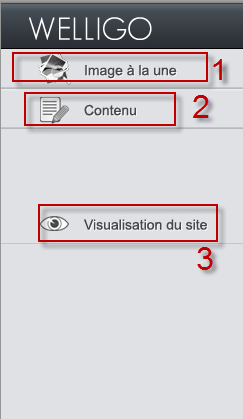Voici le bandeau situé sur le coté à gauche, on retrouve ici 3 options intéressantes:
- 1: Permet d'accéder à la section "images à la une" dont nous parlerons plus tard.
- 2: Permet d'accèder à la section contenu du site, c'est la partie la plus importante, nous y reviendrons plus tard également.
- 3: Permet de voire les modifications faites en ouvrant le site dans un nouvel onglet.
3: Bandeau du bas
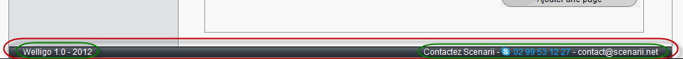Ici nous avons deux informations intéressantes, la version du CMS utilisé par l'entreprise à gauche et les coordonées permettant de contacer l'entreprise droite (numéro de téléphone et adresse mail.
4 : La section contenu
Partie Accueil:
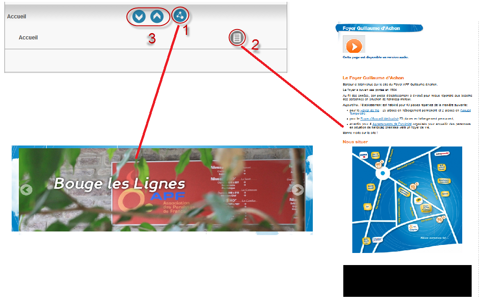Ce shéma fait le lien entre l'interface d'administration et le site, l'option indiquée dans l'impression d'écran de l'interface d'administration modifie la zone du site indiquée par l'impression d'écran reliée.
- 1: Permet de réaliser des modifications sur la galerie d'image de la page d'accueil. En cliquant dessus, nous arrivons sur cette page: 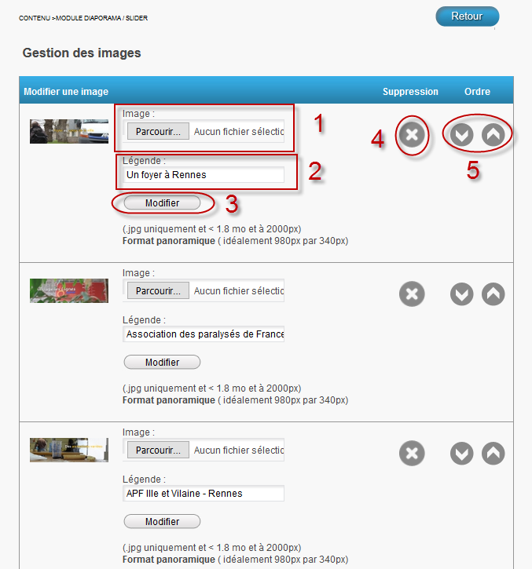
Ici vous pouvez modifier chaque image de la galerie, sachant que les images sont rangées de façon à ce que la première image en haut soit la première image à apparaitre dans la galerie et que la dernière (en bas) soit la dernière à apparaitre dans la galerie.
- 1: Ici vous pouvez remplacer l'image par une autre (pour savoir qelle image est concernée vous pouvez regarder à gauche où se trouve une miniature de l'image concernée), il suffit d'appuyer sur parcourrir et de sélectionner la nouvelle image dans les dossiers de votre ordinateur.
- 2: Et ici vous pouvez modifier la légende, le texte sur l'image.
- 3: Comme son nom l'indique gràce au bouton valider vous pouvez valider les modifications que vous avez fais pour quelles apparaissent sur le site.
- 4: La croix permet elle de supprimer l'image concernée.
- 5: Ces deux fléches permettent de changer la position à laquelle elle est dans le diaporama de la galerie. La fléche du bas va donc faire avncer l'image d'une place dans le diaporama et la fléche du abs la faire reculer d'une place dans le diaporama au contraire.
- 2: Permet de mofifier le contenu du cadre central de la page daccueil (les différents paragraphes, images ...). 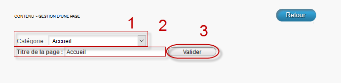
- 1: Permet der changer la catégorie dans laquelle se situe la page, c'est à dire changer son emplacement dans le site. On pourrait par exemple décider de mettre cette page dans la partie présentation si on le voulait.
- 2: Ici on peut tout simplement changer le nom de la page, on pourrait si on voulait l'appeler "Chocolat", ça n'aurait bien évidemment aucun sens mais on pourrait quand même.
- 3: Permet de voire les modifications faites en ouvrant le site dans un nouvel onglet.
Ensuite on peut faire des modifications sur le contenu lui même comme indiqué en dessous.
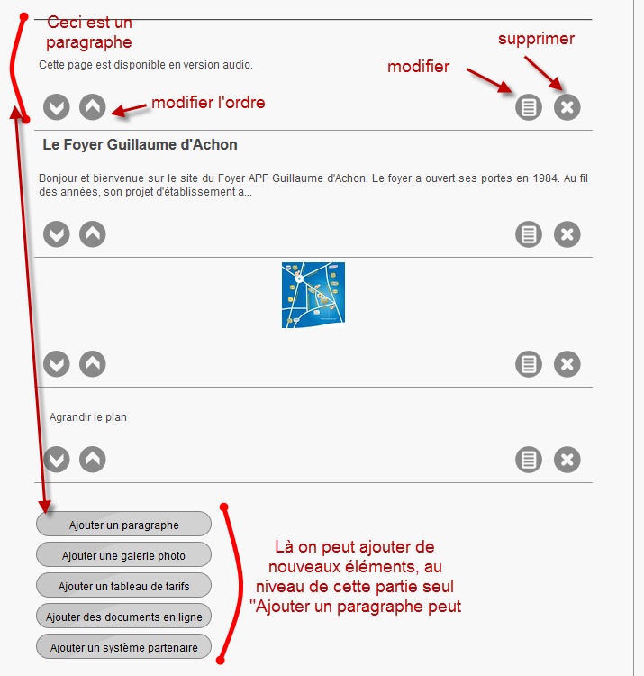 - 3: On a déjà retrouvé ces boutons plus tôt rappelez vous, mais ici ils n'auront pas vraiment d'utilité (donc on touche à rien S.V.P).